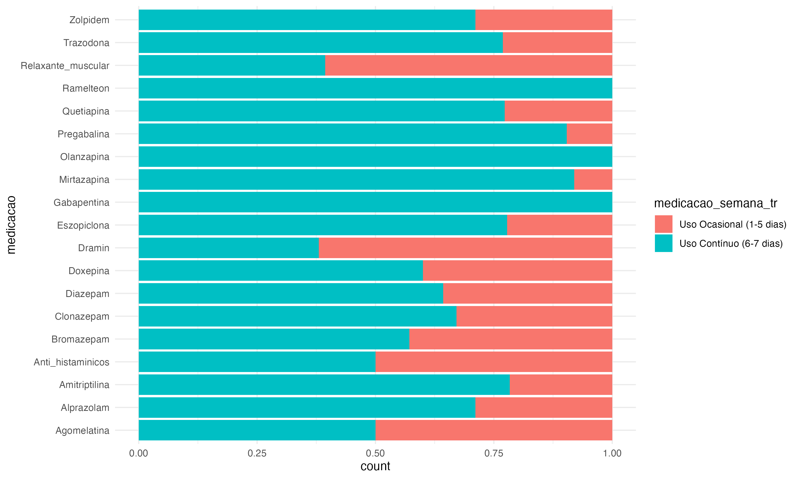
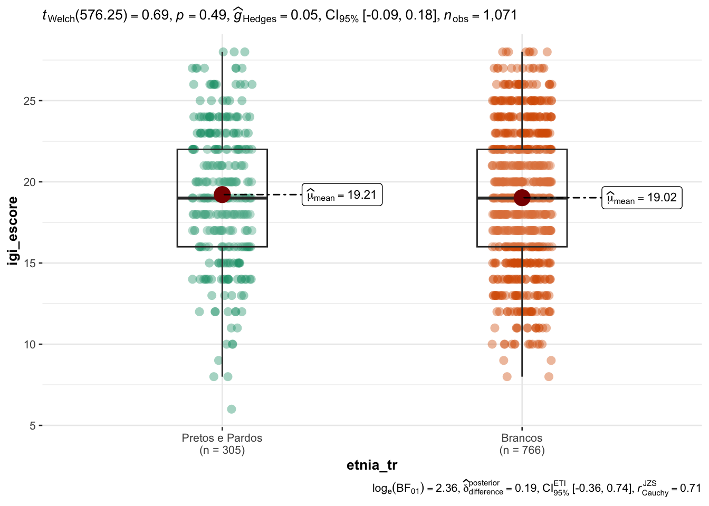

| **Characteristic** | **Não Usa**, N = 464 | **Usa**, N = 694 | **p-value** |
|---|---|---|---|
| Idade | 38.79 (10.23) | 39.24 (9.82) | 0.5 |
| Sexo | 0.034 | ||
| Feminino | 347 (75%) | 555 (80%) | |
| Masculino | 116 (25%) | 137 (20%) | |
| Atividade Física | 0.7 | ||
| Ativo (≥2x/semana) | 241 (52%) | 353 (51%) | |
| Sedentário (<2x/semana) | 223 (48%) | 340 (49%) | |
| Escolaridade | 0.8 | ||
| Superior | 340 (74%) | 511 (74%) | |
| Nao Superior | 121 (26%) | 177 (26%) | |
| Estado Civil | 0.3 | ||
| Married/United | 206 (44%) | 330 (48%) | |
| Single/Divorced | 258 (56%) | 364 (52%) | |
| Etnia | 0.001 | ||
| Pretos e Pardos | 159 (34%) | 176 (26%) | |
| Brancos | 303 (66%) | 511 (74%) | |
| Região | 0.006 | ||
| Distrito Federal | 6 (1.3%) | 24 (3.5%) | |
| Região Centro-Oeste | 5 (1.1%) | 25 (3.6%) | |
| Região Nordeste | 29 (6.3%) | 59 (8.5%) | |
| Região Norte | 11 (2.4%) | 20 (2.9%) | |
| Região Sudeste | 373 (81%) | 504 (73%) | |
| Região Sul | 39 (8.4%) | 62 (8.9%) | |
| IGI Score | 17.71 (4.06) | 19.93 (4.04) | <0.001 |
| Depressão (HADS-D) | 9.00 (4.22) | 9.84 (4.42) | 0.001 |
| Ansiedade (HADS-A) | 10.92 (4.18) | 12.00 (4.26) | <0.001 |
Análises Descritivas do Banco Medicamentos
Tabela 1
Os participantes foram divididos em indivíduos que não tomaram medicamentos para dormir no último mês (Não Uso) e aqueles que tomam pelo menos 1x por semana (Uso), respondendo a seguinte pergunta:
No último mês, com qual frequência semanal você usou alguma destas medicações para dormir:
Esta pergunta acompanhava a lista dos 19 medicamentos da Tabela 2.As opções eram de 0x/semana a 7x/semana, sendo assim, pessoas do grupo Não Usa marcaram 0x/semana no ultimo mês.
Tabela 2
Para verificar o perfil de distribuição de uso dos medicamentos entre indivíduos que tomam medicamentos em Uso Contínuo e Uso Ocasional, de acordo com a mesma pergunta anterior:
No último mês, com qual frequência semanal você usou alguma destas medicações para dormir:
Aqueles que tomam entre 1 e 5x/semana foram considerados usuários ocasionais, e acima ou igual a 6x/semana foram considerados usuários contínuos.
| **Characteristic** | **Uso Ocasional (1-5 dias)**, N = 252 | **Uso Contínuo (6-7 dias)**, N = 442 | **p-value** |
|---|---|---|---|
| Alprazolam | 24 (9.5%) | 59 (13%) | 0.14 |
| Bromazepam | 6 (2.4%) | 8 (1.8%) | 0.6 |
| Clonazepam | 50 (20%) | 102 (23%) | 0.3 |
| Diazepam | 5 (2.0%) | 9 (2.0%) | >0.9 |
| Zolpidem | 82 (33%) | 202 (46%) | <0.001 |
| Eszopiclona | 6 (2.4%) | 21 (4.8%) | 0.12 |
| Amitriptilina | 8 (3.2%) | 29 (6.6%) | 0.056 |
| Doxepina | 2 (0.8%) | 3 (0.7%) | >0.9 |
| Trazodona | 24 (9.5%) | 80 (18%) | 0.002 |
| Mirtazapina | 2 (0.8%) | 23 (5.2%) | 0.003 |
| Gabapentina | 0 (0%) | 6 (1.4%) | 0.092 |
| Pregabalina | 5 (2.0%) | 47 (11%) | <0.001 |
| Olanzapina | 0 (0%) | 3 (0.7%) | 0.6 |
| Quetiapina | 22 (8.7%) | 75 (17%) | 0.003 |
| Ramelteon | 0 (0%) | 5 (1.1%) | 0.2 |
| Agomelatina | 3 (1.2%) | 3 (0.7%) | 0.7 |
| Anti-histamínicos | 24 (9.5%) | 24 (5.4%) | 0.041 |
| Relaxante Muscular | 94 (37%) | 61 (14%) | <0.001 |
| Dramin | 44 (17%) | 27 (6.1%) | <0.001 |
Gráficos dos Medicamentos
Para analisar visualmente a distribuição de uso de medicamentos na amostra total e em grupos, foram feitos gráficos de barras
Os 10 medicamentos mais utilizados pela amostra total
Medicamentos mais utilizados pela amostra total
Proporção de uso de medicamentos entre os grupos (Uso Ocasional vs Uso Contínuo)

Classes dos Medicamentos mais utilizadas pela amostra total

Proporção de uso das classes de medicamentos entre os grupos (Uso Ocasional vs Uso Contínuo)
Regressão Logística
Para descrever os fatores (psicologicos e sociais) associados ao Uso de medicamentos, foi feita uma regressão logística. A tabela apresenta os resultado em Odds Ratio, e o texto abaixo os resultados no formato em log-odds.
[1] “Não Usa” “Usa”
| (1) | |
|---|---|
| * p < 0.05, ** p < 0.001 | |
| (Intercept) | 0.09** [0.04, 0.22] |
| idade | 1.00 [0.99, 1.02] |
| sexo_trMasculino | 0.75 [0.55, 1.02] |
| escolaridade_trNao Superior | 0.94 [0.69, 1.28] |
| estado_civil_trSingle/Divorced | 0.90 [0.69, 1.18] |
| etnia_trBrancos | 1.55** [1.17, 2.06] |
| atividade_fisica_trSedentário (<2x/semana) | 0.92 [0.70, 1.20] |
| igi_escore | 1.14** [1.10, 1.18] |
| ehad_ansiedade_escore | 1.02 [0.98, 1.06] |
| ehad_depressao_escore | 1.00 [0.96, 1.04] |
| Num.Obs. | 1067 |
| AIC | 1359.9 |
| BIC | 1409.6 |
| Log.Lik. | -669.939 |
| RMSE | 0.47 |
We fitted a logistic model (estimated using ML) to predict uso_naouso with idade, sexo_tr, escolaridade_tr, estado_civil_tr, etnia_tr, atividade_fisica_tr, igi_escore, ehad_ansiedade_escore and ehad_depressao_escore (formula: uso_naouso ~ idade + sexo_tr + escolaridade_tr + estado_civil_tr + etnia_tr + atividade_fisica_tr + igi_escore + ehad_ansiedade_escore + ehad_depressao_escore). The model’s explanatory power is weak (Tjur’s R2 = 0.08). The model’s intercept, corresponding to idade = 0, sexo_tr = Feminino, escolaridade_tr = Superior, estado_civil_tr = Married/United, etnia_tr = Pretos e Pardos, atividade_fisica_tr = Ativo (≥2x/semana), igi_escore = 0, ehad_ansiedade_escore = 0 and ehad_depressao_escore = 0, is at -2.39 (95% CI [-3.30, -1.51], p < .001). Within this model:
- The effect of idade is statistically non-significant and positive (beta = 1.50e-03, 95% CI [-0.01, 0.02], p = 0.831; Std. beta = 0.02, 95% CI [-0.12, 0.15])
- The effect of sexo tr [Masculino] is statistically non-significant and negative (beta = -0.29, 95% CI [-0.60, 0.02], p = 0.068; Std. beta = -0.29, 95% CI [-0.60, 0.02])
- The effect of escolaridade tr [Nao Superior] is statistically non-significant and negative (beta = -0.06, 95% CI [-0.37, 0.24], p = 0.689; Std. beta = -0.06, 95% CI [-0.37, 0.24])
- The effect of estado civil tr [Single/Divorced] is statistically non-significant and negative (beta = -0.11, 95% CI [-0.38, 0.16], p = 0.442; Std. beta = -0.11, 95% CI [-0.38, 0.16])
- The effect of etnia tr [Brancos] is statistically significant and positive (beta = 0.44, 95% CI [0.15, 0.72], p = 0.003; Std. beta = 0.44, 95% CI [0.15, 0.72])
- The effect of atividade fisica tr [Sedentário (<2x/semana)] is statistically non-significant and negative (beta = -0.09, 95% CI [-0.36, 0.18], p = 0.521; Std. beta = -0.09, 95% CI [-0.36, 0.18])
- The effect of igi escore is statistically significant and positive (beta = 0.13, 95% CI [0.10, 0.17], p < .001; Std. beta = 0.55, 95% CI [0.40, 0.70])
- The effect of ehad ansiedade escore is statistically non-significant and positive (beta = 0.02, 95% CI [-0.02, 0.06], p = 0.357; Std. beta = 0.08, 95% CI [-0.09, 0.24])
- The effect of ehad depressao escore is statistically non-significant and negative (beta = -1.78e-03, 95% CI [-0.04, 0.04], p = 0.928; Std. beta = -7.78e-03, 95% CI [-0.18, 0.16])
Standardized parameters were obtained by fitting the model on a standardized version of the dataset. 95% Confidence Intervals (CIs) and p-values were computed using a Wald z-distribution approximation.
Comparação do IGI entre Pretos/Pardos vs Brancos
De acordo com a nossa regressão logística da sessão anterior, vimos que o IGI (\(OR\) = 1.14) é um preditor importante para o Uso de medicamentos, bem como a Etnia (\(OR\) = 1.55), para verificar se a diferença poderia ser explicada pela diferença do IGI entre os grupos de Etnia, foi feito um teste-t comparando o IGI entre ambos os grupos:
Report (teste-t) e gráfico da comparação
Effect sizes were labelled following Cohen’s (1988) recommendations.
The Welch Two Sample t-test testing the difference of df_insones\(igi_escore by df_insones\)etnia_tr (mean in group Pretos e Pardos = 19.21, mean in group Brancos = 19.02) suggests that the effect is positive, statistically not significant, and very small (difference = 0.19, 95% CI [-0.36, 0.74], t(576.25) = 0.69, p = 0.493; Cohen’s d = 0.05, 95% CI [-0.09, 0.18]) 